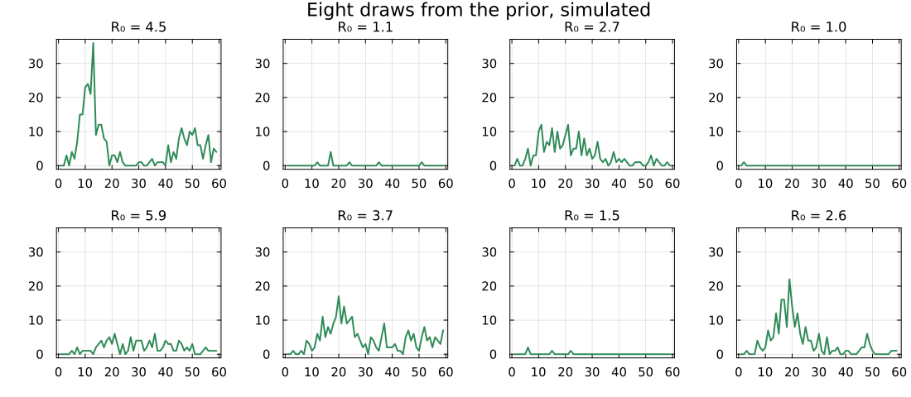
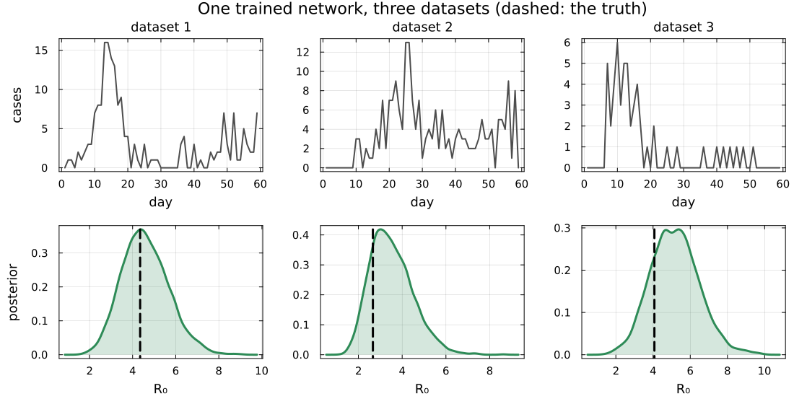
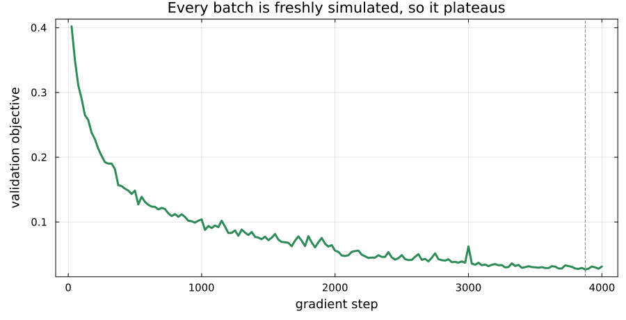
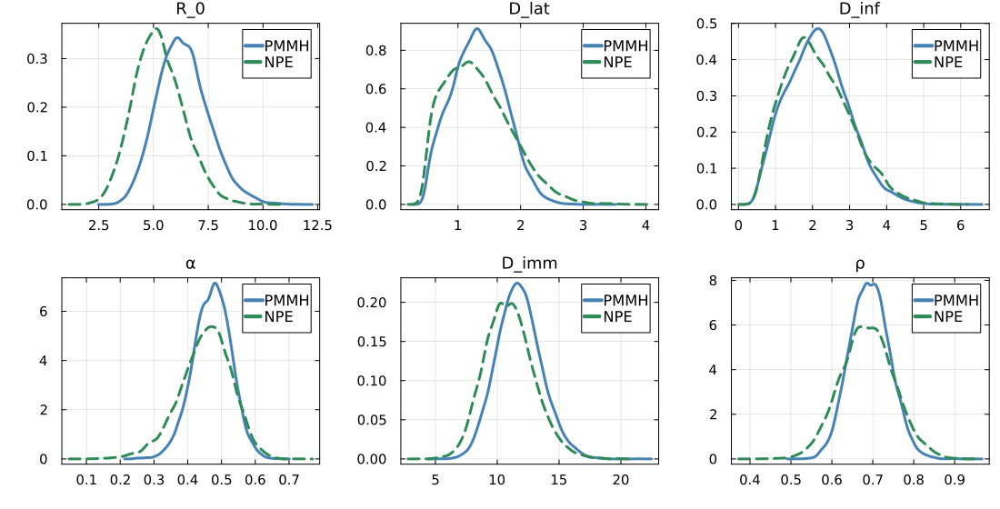
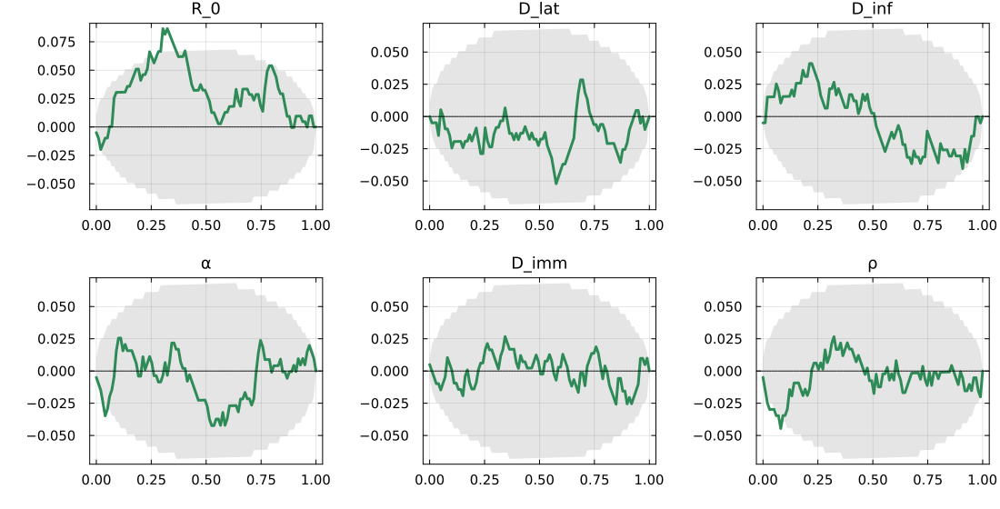
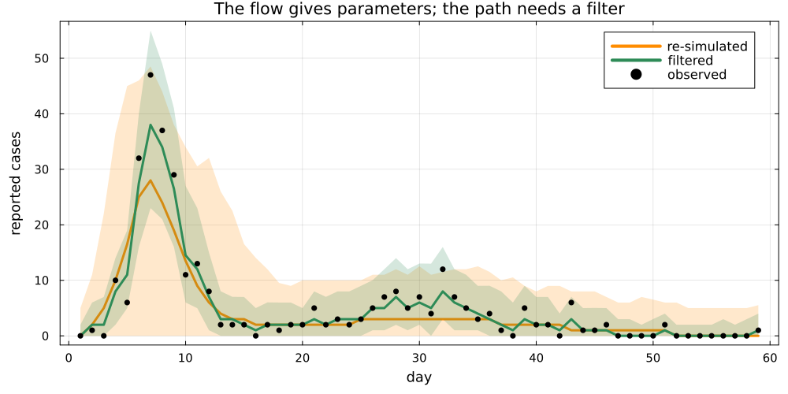
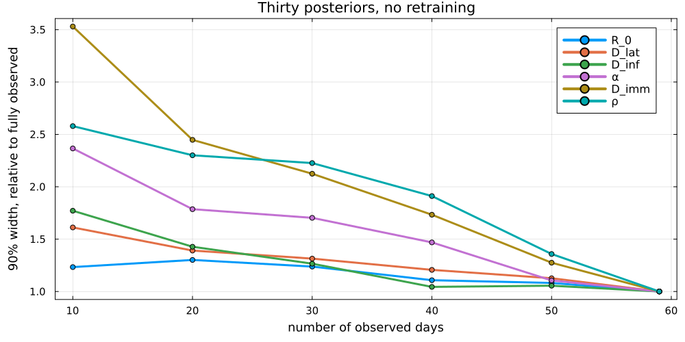

Learning the posterior as a function of the data
PMMH gave us the SEIT4L posterior.
Every likelihood evaluation was a full particle filter. The committed chain ran half a million of them.
Ask about a second island, or a different reporting schedule, and you pay the whole cost again.
Instead of asking
what is the posterior for this dataset?
ask
what is the posterior as a function of the data?
Answer that once and every later dataset is a lookup. This is amortised inference.
Simulating the 512,000 outbreaks a training run consumes: about two minutes.
The same number of 256-particle likelihood evaluations: hours.
We spend simulation and buy back the likelihood evaluations.
We never write down a likelihood. We only ever simulate.
Those pairs are the training data.

A network that takes data in and returns a distribution over parameters.
Fit it by maximising the density it puts on the parameters that actually produced each simulation.
The minimiser of that loss is the true posterior.
Papamakarios and Murray (2016)
A normalising flow: an invertible map carrying a standard normal onto the posterior.
Split the parameters in two. One half, plus the data, chooses a scale and a shift for the other half.
Invertible by construction, so we can both score it and sample from it.


A fresh batch every gradient step, so there is nothing to overfit to.

Five of the six NPE intervals are wider than the PMMH one, by 8 to 38 per cent.
R_0 is the exception: its width matches PMMH almost exactly, while its centre sits about a posterior standard deviation low.
Wider on this run. A flow trained on a finite budget is often too narrow instead (Hermans et al. 2022).
A matching width says nothing about where an interval sits.

Simulate from the prior, fit, and record where the truth falls among the draws. Calibrated means uniform.
R_0 rises above the band: ranks skewed low, so the estimator centres it too high.
Convergence says a sampler settled; calibration tests where it settled, though even the prior passes it (Talts et al. 2018). A flow only has the second.

The flow returns in milliseconds, for any dataset, forever.
It holds no latent path, so a trajectory conditioned on the data still costs a particle filter run — one per trajectory.
Still a bargain beside half a million.

Once, for one dataset: use PMMH.
The hundredth time, for the hundredth dataset: amortisation wins.
And when there is no likelihood to write down, only a simulator.
In the practical you will
Neural posterior estimation